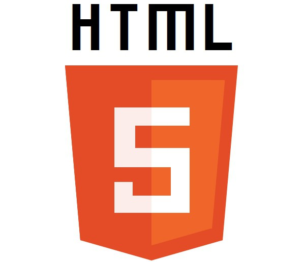

HTML (от англ. HyperText Markup Language — «язык гипертекстовой разметки») — стандартизированный язык разметки документов во Всемирной паутине.Большинство веб-страниц содержат описание разметки на языке HTML (или XHTML). Язык HTML интерпретируется браузерами; полученный в результате интерпретации форматированный текст отображается на экране монитора компьютера или мобильного устройства.
Язык HTML до 5-й версии определялся как приложение SGML (стандартного обобщённого языка разметки по стандарту ISO 8879). Спецификации HTML5 формулируются в терминах DOM (объектной модели документа).Язык XHTML является более строгим вариантом HTML, он следует синтаксису XML и является приложением языка XML в области разметки гипертекста.
CSS (/siːɛsɛs/ англ. Cascading Style Sheets «каскадные таблицы стилей») — формальный язык описания внешнего вида документа (веб-страницы), написанного с использованием языка разметки (чаще всего HTML или XHTML). Также может применяться к любым XML-документам, например, к SVG или XUL.
CSS используется создателями веб-страниц для задания цветов, шрифтов, стилей, расположения отдельных блоков и других аспектов представления внешнего вида этих веб-страниц. Основной целью разработки CSS являлось отделение описания логической структуры веб-страницы (которое производится с помощью HTML или других языков разметки) от описания внешнего вида этой веб-страницы (которое теперь производится с помощью формального языка CSS). Такое разделение может увеличить доступность документа, предоставить большую гибкость и возможность управления его представлением, а также уменьшить сложность и повторяемость в структурном содержимом.Кроме того, CSS позволяет представлять один и тот же документ в различных стилях или методах вывода, таких как экранное представление, печатное представление, чтение голосом (специальным голосовым браузером или программой чтения с экрана), или при выводе устройствами, использующими шрифт Брайля[источник не указан 561 день].
Javascript мультипарадигменный язык программирования.Поддерживает объектно-орентированный, императивный и функциональный стили.Javascript обычно используется как встраиваемый язык для программного доступа к объектам приложений.Наиболее широкое применение находит в браузерах как язык сценариев для придания интерактивности веб-страницам.Основные архитектурные черты:динамическая типизация, слабая типизация,автоматическое управление памятью,протитипное праграммирование, функции как объекты первого класса
Программы, написанные на языке JavaScript, называются скриптами. В браузере они подключаются непосредственно к HTML-документу и, как только загружается страница – тут же выполняются. Процесс выполнения скрипта называют «интерпретацией». Если PHP скрипт обрабатывается на стороне сервера с помощью PHP интерпретатора, то JavaScript выполняется в браузере пользователя JavaScript интерпретатором. Сегодня каждый браузер поддерживает JavaScript, тем самым делая его языком веба.